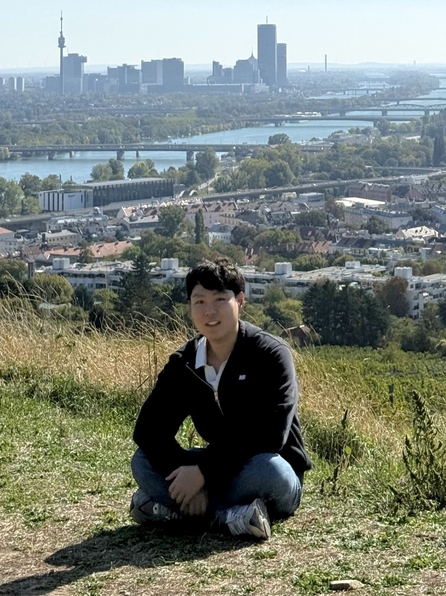

ICCV 2025

Computer Vision · Generative AI
Taewoo Kim
Postdoctoral Researcher at INSAIT
Ph.D., KAIST · Computer Vision Researcher
Working on visual generation and low-level vision, including image and video generation, editing, and restoration.
About Me
I am a Postdoctoral Researcher at INSAIT, focusing on controllable video generation. I received my Ph.D. from KAIST under the supervision of Prof. Kuk-Jin Yoon, where I worked on computer vision, machine learning, and computational imaging. Before joining INSAIT, I worked in the camera algorithm team at Qualcomm, developing ML-based computational imaging and camera systems.
My work focuses on generative AI (image and video generation), computational photography, and multimodal data fusion. I welcome collaborations and discussions—please feel free to reach out.
Publications (Google Scholar)
NeurIPS 2024
A Benchmark Dataset for Event-Guided Human Pose Estimation and Tracking in Extreme Conditions
ECCV 2024
Towards Real-world Event-guided Low-light Video Enhancement and Deblurring
ECCV 2024
CMTA: Cross-Modal Temporal Alignment for Event-guided Video Deblurring
CVPR 2024
Frequency-aware Event-based Video Deblurring for Real-world Motion Blur
CVPR 2024
TTA-EVF: Test-Time Adaptation for Event-based Video Frame Interpolation via Reliable Pixel and Sample Estimation
ICCV 2023
Non-coaxial Event-Guided Motion Deblurring with Spatial Alignment
CVPR 2023
★ Highlight Paper (Top 2.5%)
Event-based Video Frame Interpolation with Cross-Modal Asymmetric Bidirectional Motion Fields
ECCV 2022
★ Oral Presentation (Top 2.7%)
Event-guided Deblurring of Unknown Exposure Time Videos
RA-L + IROS 2020
★ Oral Presentation
Loop-Net: Joint Unsupervised Disparity and Optical Flow Estimation of Stereo Videos with Spatiotemporal Loop Consistency
Education
Ph.D. in Mechanical Engineering, KAIST
Thesis: Video Enhancement with Event Cameras
Advisor: Prof. Kuk-Jin Yoon
M.S. in Robotics, KAIST
Thesis: Joint Unsupervised Disparity and Optical Flow Estimation
Advisor: Prof. Kuk-Jin Yoon
B.S. in Mechanical Engineering, Yonsei University
Awards
- CVPR 2023 Highlight Paper — Top 2.5% of all submissions
- ECCV 2022 Oral Presentation — Top 2.7% of all submissions
- IPIU 2023 Gold Prize — Second Best Paper Award
Academic Service
- Conferences: CVPR, ICCV, ECCV, WACV, NeurIPS, SIGGRAPH, ICLR, AAAI.
- Journals: IEEE TPAMI, IJCV, Neural Networks, RA-L, IJAT